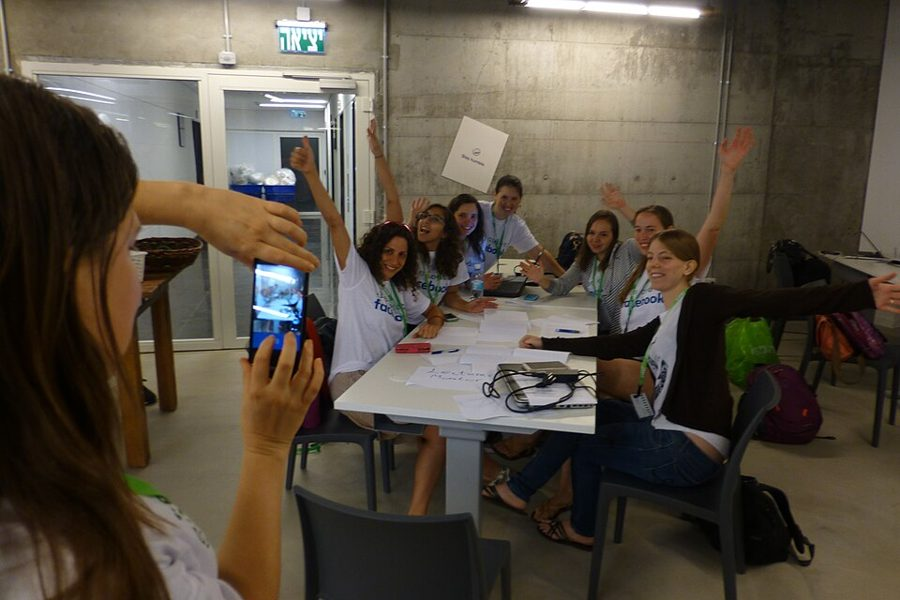

immortalize
… a saying immortalized in posters …
让（一句话）永久留下来；这里是印成了海报
本义是「使不朽」，这里是说这句话被印进海报、贴满园区，人人都记得。
团队大了，经理管不过来每一个人，管的就是大家怎么相处、怎么做事。这一章问的是：团队的文化从哪来，经理能做什么？作者讲了几个 Facebook 的故事：搞挂网站却没被开除的实习生，Sheryl Sandberg 挂在嘴边的「难谈的话」，下属在 360 评估里给她的一记回马枪，她自己定的一条规矩怎样变成了白忙。读的时候抓一条线：你说的、你做的、你奖励的，要对得上。结语是全书的收尾，很短，值得读完。
上一章讲团队变大以后怎么带。这一章再退一步：人多了，你管的不只是自己和每个下属的关系，还有下属彼此之间、和整个团队的关系，这就是文化。§1 作者回指第 5 章那套盘点自己长处和抱负的练习，这次用在团队身上。结语接在这一章后面，是全书的收尾：作者回头看自己的路。
这一章的正面例子几乎都来自 Facebook：园区海报、黑客马拉松、Mark 每周的问答。2021 年以后外界对这家公司的文化争议很大，2022 年 Meta 也改了价值观。把它们当作者的亲身经历来读，评价见页末。
团队的文化是怎么来的？你说的、你做的、你奖励的，哪一样算数？
读的时候带着这几个问题。不用先找答案，读完回来对照「检查一下理解」。
这一章的每一节一条，按原书顺序。粗体是本站给的节名，后面是档和英文词数；下面一行是原书小标题、纸书页码和这一节开头几个英文词；再下面是译本的小標題和开头几个字，在译本电子书里搜它就能跳过去。每节标了档：「先读」是这一章的骨架，「有空」例子更多、讲得更细，跳过不丢线。读完打个勾。
先把这一章用到、作者默认你懂的几个概念讲一遍。讲的是概念本身和它在管理界的来历，作者拿它推出什么，读原书时自己看。
讲组织文化，引用最多的框架之一来自 MIT 斯隆管理学院的 Edgar Schein（1928–2023），他的《组织文化与领导力》1985 年初版。他把文化分成三层，越往下越难看见。最上面是看得见的东西（artifacts）：办公室的布局、大家穿什么、墙上的海报、会怎么开。中间是说出来的价值观（espoused values）：官网和员工手册上写的那几条。最底下是默认的基本假设（basic assumptions）：大家心照不宣、从不拿出来讨论的「本来就该这样」，比如「出了事先找人背锅」「老板定的事不用争」。
Schein 的要点是三层可能对不上。墙上写着「开放」，底下的假设却是「坏消息别往上报」，那真正管用的是最底层。外来的人看得见海报、看不见假设；在里面待久了的人正相反，自己的假设已经看不见了。
在这一章：§0 作者给文化下定义，又借前辈的话说看它肯放弃什么，和 Schein 分第二层、第三层相通；§1 的子文化也落在这里。
这是康奈尔大学的 Tony Simons 2002 年在期刊《Organization Science》上提出的概念：在下属眼里，经理说的和做的对不对得上，包括答应的事有没有兑现、嘴上提倡的价值观自己守不守。Simons 把它和信任连在一起：言行对不上，下属就不再把你的话当真。
它和「人品好不好」不是一回事。一个真心相信「要多听反馈」、却总忘了去问的经理，为人很真诚，在下属眼里照样是言行不一。这个概念量的是别人看到的落差，不是你的本心。所以你觉得理由充分的例外（「我太忙」「我的情况不一样」），在下属那里多半也算落差。
在这一章：§3 整节讲的就是它：作者列了五个言行不一的经理，又讲自己劝下属多要反馈、自己却很少找人要。作者没用这个名字。
管理学讲激励错位，最常引的是 Steven Kerr 1975 年的文章《奖励 A 却指望 B 的愚蠢》：组织嘴上要的是一样东西，制度奖励的却是另一样，人就照奖励的去做。原因之一是组织偏爱容易量的东西，量不出来的就没人奖。
和它相关的是古德哈特定律，名字来自英国经济学家 Charles Goodhart 1975 年谈货币政策的一个观察；今天流传最广的说法「一项指标一旦成了目标，就不再是好指标」，是人类学家 Marilyn Strathern 1997 年的概括。程序员熟悉的例子：按代码行数考核，代码就变长；按关单数考核，工单就被拆成碎片。
在这一章：§4 她自己定的「至少三个方案」、代码行数、按字数付稿费和四个激励陷阱，都是这件事的例子。作者没用这两个名字。
以后带人碰到这些事，从这里查。每张卡先说动手前要想清楚什么，再用本站的话转述作者的办法（不照抄原书的清单），然后是书外的补充和最容易犯的错，最后指回书里讲它的那一节和纸书页码。全书的情境卡汇总在情境卡。
书里：Know the Kind of Team You Want…，纸书 p.240–242
书里：Always Walk the Walk，纸书 p.244–246
书里：Create the Right Incentives，纸书 p.246–249
书里：Create the Right Incentives，纸书 p.249
读英文纸书可能卡住的地方，按原书顺序分节排。灰色斜体是原文里连续的几个词，后面是纸书页码，翻书找得到；标「每个字都认识」的，是每个词都眼熟、合起来意思却变了的，最容易读错。点「记下」收进词本。
按在书里出现的顺序排，标题前是节号。只讲到读懂这一章需要的程度。书里的同事和下属（那位实习生、作者辅导过的经理、问她怎么学得快的下属……）是普通人，这里不另作介绍。
实习生搞挂网站后，全队开的 postmortem 是科技公司处理事故的固定做法：事后把经过一步步还原，问的是「为什么一个人的一次失误就能把系统打挂」，而不是「谁干的」。Google 2016 年出的《Site Reliability Engineering》专有一章讲这个，说不追责的复盘是他们运维文化的一条原则：假定每个人都是好意，并且按当时掌握的信息做了对的事；如果文化里盛行指责，大家就不敢把问题说出来。第 8 章讲过复盘，纸书 p.210。「Nothing at Facebook Is Somebody Else’s Problem」那类园区海报的来历，见第 4 章的「书里的人和背景」。
这一节里，作者讲她怎样把「难谈的话」（hard conversations）讲成了公司文化：和同事之间有了疙瘩，就坐下来摊开谈。作者记不清她是在全员会、问答还是自家的晚宴上开始讲的；她会请过去一个月有过难谈的话的人举手，再讲自己最近的一次。作者说这个词后来成了 Facebook 的日常用语。
作者说按字数给作家付稿费，海明威大概不会同意。Ernest Hemingway（1899–1961）以文字简省出名，句子短，形容词少；他有个「冰山理论」，主张写出来的只是露出水面的一角，大部分意思留在水下让读者自己体会。按字数算钱，等于奖励他最不屑做的事。译本：「擅長寫短篇故事的美國作家海明威」，前半是译者的补充：他确实以短篇起家，但作者拿他开玩笑，是因为他写得简洁。

黑客马拉松（hackathon）是 hack 和 marathon 拼成的词：一群人在一段集中的时间里（常常熬到深夜），把自己的点子做成能跑的原型，最后拿出来给大家看。作者说 Facebook 的聊天和视频功能都出自内部的黑客马拉松；英文维基上还提到，Facebook 的「赞」按钮也是在一次黑客马拉松里想出来的。作者说它把 Facebook 最早的两条价值观「Be Bold」「Move Fast」落到了行动上，这两条后来的命运见「今天怎么看」。
作者说他十多年来每周五下午开全员问答，谁都能问任何问题，包括「这件事看起来是个坏主意，我们为什么还要做」。这种问答后来也有录音流到了媒体手里。2022 年以后这类会怎么开，见「今天怎么看」。
结语里作者说，Facebook 办公室的天花板是敞开的、没有收尾，管线和成捆的电线都露着（页首的照片能看到这种样子）。这是故意的：2015 年，Frank Gehry 设计的新办公楼启用时，Zuckerberg 写道，大楼本身很简单、不华丽，这是有意为之，他们想让空间感觉像一件还在进行中的作品。作者最喜欢的那张橙色大字海报「The Journey Is 1% Finished」，说的是同一个意思：要做的事还多着呢。
对着译本读这一章时，下面这些地方会把人读歪。方框里是译本的原句，在译本电子书里搜它就能找到；灰色斜体是英文原文那一处，后面是纸书页码。只收意思错了、反了、漏了的，措辞上的出入不收。全书的勘误汇总在译本勘误。
… emails to my managers about my …
译本：「寫電子郵件給我的主管」
作者这时带着好几层人，my managers 是向她汇报的那些经理。这一段讲她怎样向团队传达自己看重的事：每周给手下的经理们写信讲自己的思考。「我的主管」一般指自己的上司，读来就像给上司写周报。
… undercut his colleague on a deal …
译本：「一種是簡單的壓低價格」
原文的两个选择是：在一单生意上压价抢走同事的单，这很容易；或者去谈一单新生意，这更难。这个陷阱的要害是只奖个人业绩会让人对同事下手。译本漏了「同事」，读起来像是普通的削价竞争。
… one of Facebook’s greatest values is …
译本：「因為Facebook最重要的價值觀是開放」
原文说开放是 Facebook 最重要的价值观之一。译本丢了「之一」，成了唯一最重要的那一条。作者的限定词要照原文读。
… taste in my mouth of inexperience …
译本：「但也充滿初生之犢不畏虎的勇氣」
原文说她回想当年，嘴里总有一股挥之不去的味道：没经验和被寄予的期待、困惑和野心搅在一起。这是在说当时的不安和忐忑，译本把后半译成了无所畏惧的勇气，口气变了。
… build something that will outlast us …
译本：「打造出超越自身的崇高事物」
outlast 是「存在得比……更久」。全书最后这句说的是：我们会建起一样东西，我们走了它还在，每个加入的人都让它更强。译本的说法丢了时间上的意思，也没有「走了它还在」这一层。
Assume that for the message to stick, it should be heard ten different times and said in ten different ways.— §2，纸书 p.243。本站译：要让一句话扎下根，就当它得被听到十次，用十种不同的方式说出来。
口气是一条操作上的建议，「Assume」是关键：不是说真要数到十，而是让你预设「说一遍远远不够」。注意后半句：十种说法，不是同一句话念十遍。她自己的办法是一对一里聊、给手下的经理写信、全员邮件、当面问答，还讲自己的失误。容易被误读成「多喊口号」，其实她要的是换着法子讲为什么。
If you’re not willing to change your behavior for a stated value, then don’t bring it up in the first place.— §3，纸书 p.245。本站译：如果你不愿为一条说出口的价值观改变自己的行为，那一开始就别提它。
这是全章说得最重的一句，口气是下判断。关键词是 stated：价值观一说出口，就成了下属拿来对照你的尺子。译本：「那就乾脆不要提」译得很利落。别读成「少提价值观为妙」：她紧接着讲的是自己被下属点破后去改，而不是从此闭嘴。
how far you get will be the sum of the millions of actions taken by your team during the small, quotidian moments— §5，纸书 p.251。本站译：你能走多远，取决于你的团队在那些平凡的日常时刻里做出的千千万万个举动。
全章正文的收束，也是全书最像结论的一句。前半句她说成败通常不是几个大决定带来的，这里的 usually 别丢。quotidian 是个书面词，故意用在「小事」上，读来郑重。译本：「聚沙成塔、積少成多的結果」意思对，但「无数个举动」「日常时刻」这两个画面没了。
读完这一章再看。下面是作者在这一章里的主张，由本站按主张之间的逻辑重新组织，不按原书的顺序；每条后面是节号，拿不准就回书里那一节再读一遍。
她把文化定义为决定事情怎么做的规范和价值观；借一位她敬佩的经理的话说，看文化不看官网，要看它肯为价值观放弃什么。实习生搞挂网站后，经理道歉、同事认领责任、全队复盘，就是「没有别人的问题」的代价。她说你不是 CEO，一举一动也在强化公司看重什么。
§0文化像性格，你不管它也在。她建议把第 5 章盘点自己的办法用到团队上：现在什么样、想要什么样、差在哪，从团队擅长又是你看重的交集起步。有些愿望超出你的控制，但大组织里能长出子文化，她举了 Facebook 增长、基础设施和设计团队各自的风气。
§1她原以为重复自己是失礼，Sheryl Sandberg 让她改了看法：要说十遍、换十种说法，拉别人一起说。她说自己讲得越勤、越投入，团队反应越积极，从没人说过她烦。但下属盯着上司的言行，不愿为一条价值观改自己的行为就别提它；她自己就被下属点出光说不做。
§2–3说了做了还不够，环境要奖励按价值观做事的人、追究越线的人。她「至少三个方案」的规定让不少人凑数白忙，从此她警惕看似简单的激励规则，宁可讲清该看重什么、为什么。发现说的和做的对不上，先问原因：结构问题就改激励；个人越线也要当场处理、事后私下说清。
§4她说成败通常不靠几个大决定，而是团队在日常小事里的无数举动；仪式和传统能让价值观落成行动。结语里她回看自己弯弯曲曲的路，承认搞砸过不少事，说自己幸运；她相信靠时间、意志和成长型思维还能学下去，好团队会建起比个人更长久的东西。
§5–6合起来：文化不是一份声明，是你说的、做的、奖励的合在一起讲出的故事，三样对上，团队才会信。全书最后，作者把这话也用在自己身上：当经理没有毕业的一天。
这本书 2019 年出版。下面挑出这一章里能被研究或后来的事情检验的说法，分「书里 / 当时 / 今天」几栏，并给一个结论。结论判的是标题里「书里的说法：」后面那一句。全书的这一节汇总在今天怎么看。
读完作者的主张，再看它站不站得住。每一块摆出三样：主流怎么看，作者怎么看，本站的评论。最后一句是本站对这一章的总体判断。
主流看法：Netflix 2009 年公开的文化手册里有一句流传很广的话：真正的价值观，不是那些好听的，而是看谁得到奖励、提拔或被请走。Schein 的三层说的也是这件事：说出来的价值观和默认的假设可以两样。
作者的看法：看文化要看它肯为价值观放弃什么；经理不是 CEO 也在塑造文化；成败是日常无数小事攒出来的。§0 §5
本站的评论：这是这一章最值得带走的一把尺子，它也可以拿来量 Facebook 自己。2021 年前员工 Frances Haugen 向美国参议院作证，指公司把利润放在用户安全前面；Zuckerberg 回应说这些说法讲不通，描绘的是一幅虚假的图景。本站不替谁下结论，只指出这类指控和作者在 §3 举的第五种言行不一是同一类。把书里的 Facebook 故事当作者的亲身经历，尺子留给自己用。
主流看法：变革管理的经典 Kotter 1995 年在《哈佛商业评论》上总结转型失败的八个错误，其中一条就是对愿景的传达少了十倍。
作者的看法：说十遍、换十种说法，讲自己的失误，拉别人一起讲；她说没有人嫌她烦，反馈反而更好。§2
本站的评论：方向对，但「从来没人说我烦」这个证据要打折：谁会当面跟副总裁说她啰嗦？重复管用的条件，是每一遍都带着新的例子，而且说的人自己在做；否则十遍只会让人更快学会左耳进右耳出。她的说法里其实有这两条（讲自己的错误、§3 的以身作则），读的时候别只记住「十遍」。
主流看法：Kerr 1975 年就指出组织常奖励 A 却指望 B。行为经济学还发现，钱有时会挤掉人本来的责任感：Gneezy 和 Rustichini 2000 年在以色列托儿所做的研究里，对晚接孩子的家长罚款后，晚到的反而更多，取消罚款也没降回去。
作者的看法：环境要奖励按价值观做事的人、问责越线的人；但要警惕看似简单的激励规则，更好的是坦率讨论该看重什么、为什么。§4
本站的评论：两半都对，难在中间。小团队里讲清为什么很管用；团队一大、考核和钱挂钩，大家最后看的还是谁升了职。作者没细说的是，多数经理改不了公司的考核制度。你能动的是表扬谁、好机会给谁、校准会上替谁说话、出了事怪不怪人，这些小激励加起来分量不轻。
本站的总体看法：这一章的工具朴素而管用：盘点团队、反复讲、以身作则、对齐激励，做到的经理不多。打折扣的是例子几乎全来自一家公司的鼎盛期，读时把尺子拿在自己手里。结语只有两页，却是全书最坦白的地方：她不装作已经毕业，这也是整本书可信的原因。
处境都是本站编的，不是书里的例子。先自己判断，想好了再点开看本站的分析；有的题没有唯一答案，分析里讲取舍。全书的判断题汇总在判断题。
你带支付团队。周五晚上，做了五年的老郑手动改了一个线上配置，支付失败了四十分钟。公司规定：一级事故要写明「责任人」，责任人当季绩效最高只能拿「符合预期」。你一直希望团队出了问题敢第一时间说出来。周一复盘会前，你的上司在群里问：
上司：「这次责任人写谁？下午前报上来。」
你怎么回？复盘会怎么开？
公司的规定你改不了，这是作者说的控制范围；但在它下面，团队仍能有自己的子文化。复盘会照不追责来开：还原时间线，追问「为什么一个人手动改配置就能打挂支付」（没有审核？没有灰度？），把流程上的洞列成改进项。
回上司时，照实说根因是缺少配置变更的把关，并说清你打算怎么补。责任人那一栏，有的经理会写自己（团队负责人），这和书里那位先道歉没把实习生带好的经理是一个思路，代价是你自己的绩效；也可以写老郑，但要先私下跟他讲清楚会发生什么、你怎么看这件事。不管怎么填，团队会盯着你怎么做，这比复盘文档上写什么更能决定下次有没有人敢说。
书里对应：§0 实习生搞挂网站的故事，纸书 p.239；§1 子文化，纸书 p.242。
公司今年推 AI 编程工具。你的上级发来通知：下季度起，每个工程师的「AI 生成代码占比」要到 50%，计入绩效，口径是 IDE 插件统计的「采纳 AI 补全的行数」。你组里最资深的老韩写底层网络库，AI 帮得上的不多。他私下跟你说：
老韩：「那我把注释和单元测试全让 AI 重新生成一遍，数字就上去了。」
你怎么回老韩？对上级怎么说？
老韩说的就是古德哈特定律：指标一成了目标，大家就去推指标本身。作者的建议是别迷信简单的规则，讲清楚「为什么」：公司真想要的大概是少做重复劳动、交付更快，而不是行数。
对老韩：不鼓励刷，也别假装指标不存在。一起找他工作里 AI 真能帮上的部分（测试、文档、迁移脚本），数字达不到的，你在考核时替他讲清楚产出。对上级：把口径的问题摆出来，建议换成更接近真实目标的衡量（交付周期、重复工作省下的时间），并说明你组里的情况。取舍是：你不带头刷，团队在排名表上可能难看一阵，这要你自己扛。
书里对应：§4 代码行数的例子和「讲清为什么」，纸书 p.247。
你接手一个团队，发现他们有个传统：每次大版本上线，最后一个离开公司的人拿一座「奋斗者」小奖杯，合影发到部门群里，大家点赞。前任经理说这是团队凝聚力的来源。你翻了翻记录：两位要接孩子的同事从没拿过；一位新人连续三周熬到凌晨两点，拿了两座。
这个传统在庆祝什么？你要不要动它，怎么动？
作者说仪式能让价值观看得见；反过来，仪式庆祝什么，大家就以为团队看重什么。这座奖杯奖的是「谁走得最晚」，不是上线做得好，对要接孩子的、远程的同事天然不公平。新人熬夜拿了两座，说明这个信号已经被接收了。
直接废掉，会被当成否定大家的付出，而凝聚力是真的。更稳的是先跟团队聊「我们到底想庆祝什么」，再换一个新传统：比如上线后的复盘会上大家投票，选出这次最让人省心的一个改动，奖杯照发、合影照拍。改之前先跟前任和老成员打个招呼。
书里对应：§5 黑客马拉松和别的团队的小传统，纸书 p.249–251；§4 的激励陷阱，纸书 p.248。
先在心里答，再点开。答错的那题，回书里把对应那一节再读一遍。
经理道歉，说自己没把他带好；其他工程师认领了没提前发现问题的责任；全队开复盘找原因和预防办法。它说明「Facebook 上没有别人的问题」这句口号有代价：要替别人的错担责任，这就是文化。
起初以为管理就是支持好每个下属、经营好一对一的关系；后来明白还不够，还要管下属彼此之间、和整个团队的关系。
你的愿望受控制范围限制：如果整个公司看重开放和协作，你的团队就很难关起门来。不过大组织里仍能长出子文化，她举了 Facebook 的几个团队。
她怕团队嫌烦，甚至觉得被看低。Sheryl Sandberg 反复讲「难谈的话」，讲到作者都记不清她是哪天开始讲的，这个词却成了公司的日常用语。作者自己多讲以后，团队的反应也更积极。
有人真的拓宽了思路，也有人只是挪挪位置、换个按钮颜色凑数，白忙还浪费大家时间。她从此对看似简单、许诺奇效的激励规则很警惕，宁可和大家讲清楚为什么要多探索。
一种是结构问题：激励本身奖错了，那就改激励。另一种不是结构问题，而是有人越了线：也必须处理，当场缓和，事后私下说清楚这不可接受。
开放是 Facebook 最重要的价值观之一；CEO 自己不做表率，别人凭什么相信它重要。
用一句话说这一章：
想一想：你待过的团队里，嘴上说的价值观和实际被奖励的东西，差得最远的一处是什么？那时你是怎么做的？如果现在你是那个团队的经理，你会先改哪一件小事？
读过又忘了，从这里想起来。挑的是这一章最值得记住的故事、办法和说法，不按原书顺序；每条后面是节号，想细看就回书里那一节。全书各章的这一节都收在全书回顾。
一句话：文化不看墙上写了什么，看你说的、做的、奖励的，和你肯为它放弃什么。
一个暑期实习生把 Facebook 搞挂了，脸都白了。他没被开除：经理道歉没把他带好，同事认领没提前发现的责任，全队一起复盘。
§0Sheryl Sandberg 讲「难谈的话」讲了太多次，作者都记不清她是从哪天开始讲的；这个词成了公司的口头禅。作者从此不怕重复自己。
§2作者用那场一对一剩下的时间教下属多要反馈。几周后的 360 评估里，这位下属在最后一条写道：你自己就很少要。
§3作者规定评审会上每人至少带三个方案。第一位设计师的另外几个版本只是挪了位置、换了按钮颜色，有人问：别的按钮都是蓝的，这里为什么是橙的？
§4刚进公司的作者在午饭桌上被拉去当裁判，正不知怎么脱身，有人说：干脆做出来看看，下次黑客马拉松就做。她由此知道了这个传统。
§5作者最爱的一张橙色大字海报，家里书桌上也放着一张小的。她说十年后回头看，今天的路还是弯的。
§6